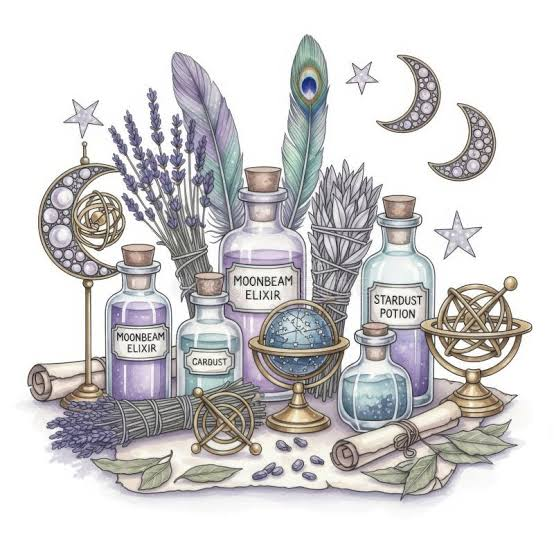
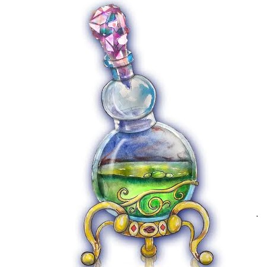

РЕЦЕПТ ЭЛИКСИРА МУДРОСТИ
Этот свиток содержит тайные знания. Прочти его внимательно.
ВАЖНОЕ ПРЕДУПРЕЖДЕНИЕ:
Ошибка в пропорциях превратит эликсир в яд!
Принимать строго по 3 капли.

Компоненты для сборки
-
Растительные ингредиенты
-
Корень мандрагоры
-
Цветок папоротника
-
Только ночной сбор
-
Только свежие лепестки
-
Минералы
-
Толченый лунный камень
-
Слеза дракона
Порядок приготовления

-
Смешать ингредиенты в медной чаше.
-
Варить на медленном огне ровно 40 минут.
- Остудить под светом полной луны.
Формула реакции:
H2O + Специи = Золото
Официальный источник:
Перейти в Энциклопедию Магии
Подпись: Архимагистр Альбус